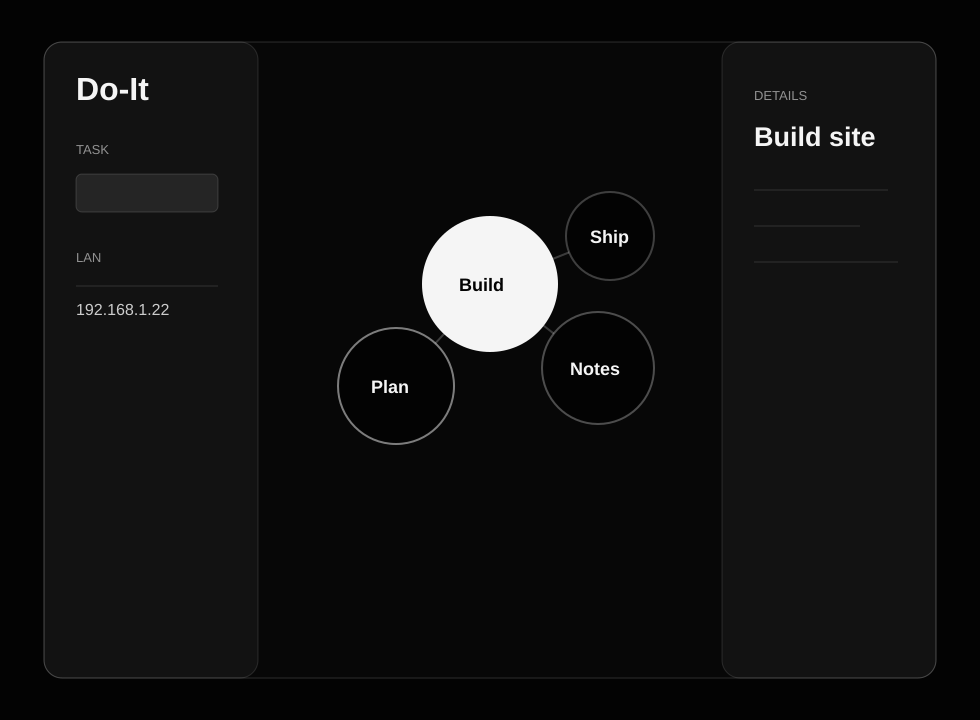

Local-first task graph
Do-It
Tasks, notes, files, and nearby devices. Served from your own machine, synced across your own network.
Latest release v1.0.0

Runtime Single Go binary
Sync Live browser updates
Storage Local JSON and uploads
Install
Run it anywhere you keep online.
The installer auto-detects Linux/macOS and amd64/arm64 for the device running it. For a different target, use the manual release assets documented in the GitHub repo.
curl -fsSL https://raw.githubusercontent.com/blackdragoon26/Do-It/main/scripts/install.sh | shDOIT_ADDR=0.0.0.0:8080 doit